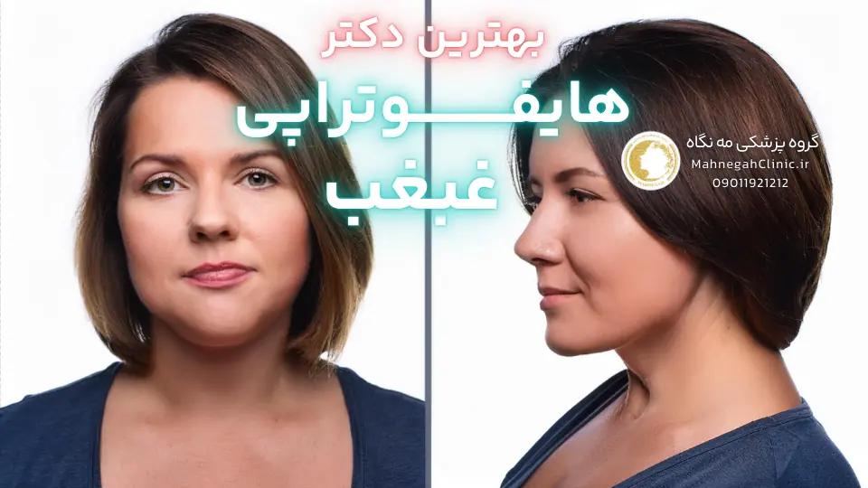
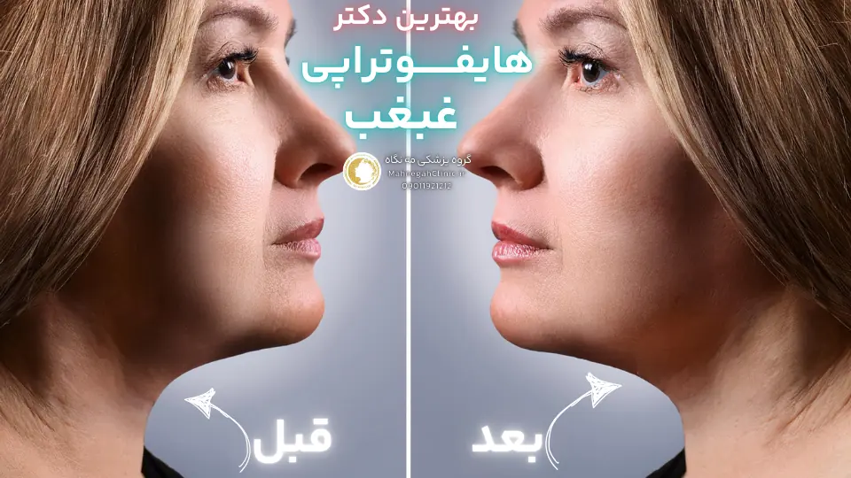
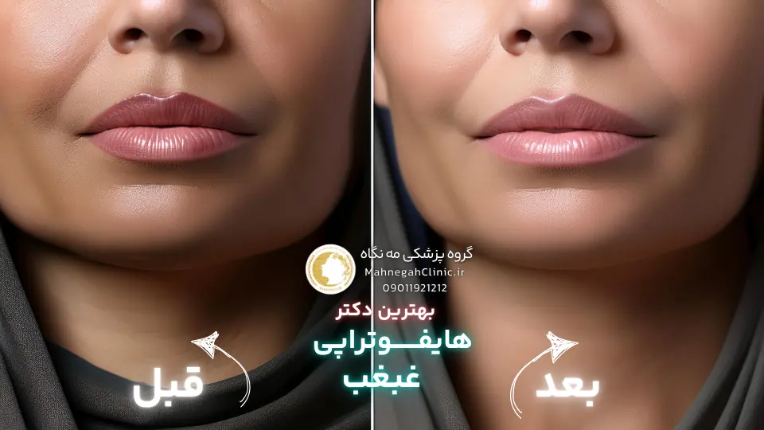
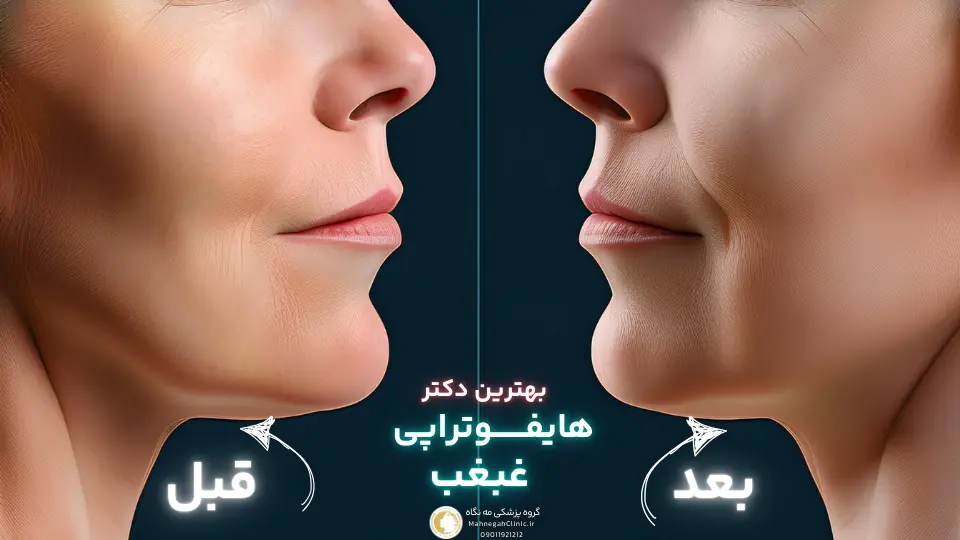
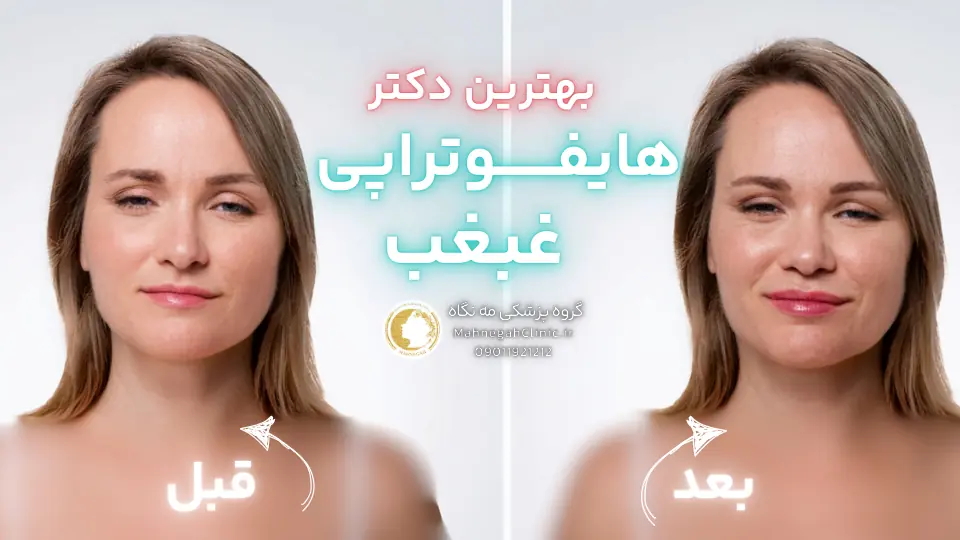
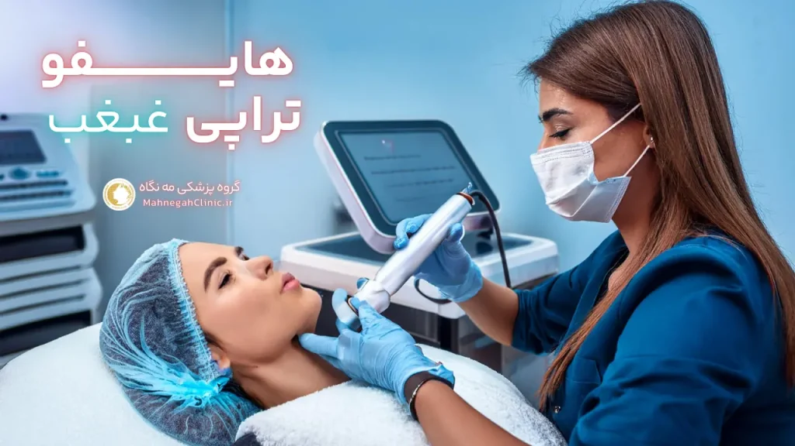

خانه / مجله / جوانسازی پوست
بهترین دکتر هایفوتراپی غبغب در سعادت آباد کیست؟

مه نگاه: سعادت آباد، بخشایش، ساختمان عرفان، واحد 108
در قلب سعادت آباد، جایی که زیبایی و سلامت در هم میآمیزند، گروه پزشکی مه نگاه (بهترین دکتر هایفوتراپی غبغب در سعادت آباد) با افتخار آماده ارائه خدمات هایفو غبغب با بالاترین کیفیت به شما عزیزان است.
ما در این مرکز، با بهرهگیری از تخصص پزشکان مجرب، استفاده از تکنولوژیهای روز دنیا و محیطی آرام و دلنشین، به شما کمک میکنیم تا جوانی و شادابی پوست خود را بازیابید و اعتماد به نفس خود را افزایش دهید.
اگر به دنبال بهترین دکتر هایفوتراپی غبغب در سعادت آباد هستید، گروه پزشکی مه نگاه با ارائه خدماتی فراتر از انتظار، انتخابی ایدهآل برای شما خواهد بود. ما در این مرکز، با تمرکز بر نیازها و خواستههای شما، بهترین و مناسبترین روش درمانی را برای شما انتخاب میکنیم و در تمام مراحل درمان، در کنار شما هستیم.
منتظر حضور گرم شما در گروه پزشکی مه نگاه هستیم. برای کسب اطلاعات بیشتر و رزرو نوبت، با ما تماس بگیرید.
آدرس: سعادت آباد، خیابان ریاضی بخشایش، ساختمان عرفان
موبایل:
تلفن:
لوکیشن: بهترین مرکز هایفوتراپی صورت در سعادت آباد
هایفوتراپی غبغب چیست و چگونه عمل میکند؟
هایفوتراپی غبغب یک روش غیرتهاجمی و نوین است که به شما کمک میکند تا بدون نیاز به جراحی، از شر غبغب خلاص شوید و به چهرهای جوانتر و جذابتر دست یابید. این روش با استفاده از امواج اولتراسوند متمرکز با شدت بالا (HIFU) عمل میکند و با تحریک کلاژنسازی و تخریب سلولهای چربی، باعث سفت شدن پوست و کاهش حجم غبغب میشود.
غبغب چیست و چرا ایجاد میشود؟
غبغب یا چربی زیر چانه، تجمع چربی در ناحیه زیر چانه است که میتواند به دلایل مختلفی مانند افزایش وزن، ژنتیک، افزایش سن و کاهش الاستیسیته پوست ایجاد شود.
این ناحیه میتواند باعث شود که صورت شما پرتر و مسنتر به نظر برسد و اعتماد به نفس شما را کاهش دهد.
مکانیسم عملکرد هایفوتراپی در رفع غبغب
در هایفوتراپی غبغب، امواج اولتراسوند با شدت بالا به لایههای عمیق پوست نفوذ کرده و با ایجاد گرما در بافت چربی، باعث تخریب سلولهای چربی میشوند. این سلولهای چربی به مرور زمان توسط بدن جذب و دفع میشوند. همچنین، گرمای ایجاد شده توسط هایفو باعث تحریک تولید کلاژن و الاستین در پوست میشود که به سفت شدن و لیفت پوست کمک میکند و در نتیجه غبغب کاهش یافته و خط فک شما مشخصتر میشود.
هایفوتراپی غبغب یک روش ایمن و موثر است که نتایج قابل توجهی را بدون نیاز به جراحی و دوره نقاهت طولانی ارائه میدهد. این روش برای افرادی که به دنبال یک راه حل غیرتهاجمی برای رفع غبغب هستند، بسیار مناسب است.
اگر شما هم از وجود غبغب رنج میبرید و به دنبال بهترین دکتر هایفوتراپی غبغب در سعادت آباد هستید، با ما همراه باشید تا در ادامه این مقاله، اطلاعات بیشتری در مورد این روش و انتخاب پزشک مناسب به شما ارائه دهیم.

مزایای هایفوتراپی غبغب نسبت به سایر روشها
هایفوتراپی غبغب به عنوان یک روش غیرتهاجمی و موثر، مزایای بسیاری نسبت به سایر روشهای رفع غبغب مانند جراحی و تزریق دارد. این مزایا باعث شده است که هایفوتراپی به یکی از محبوبترین روشهای رفع غبغب در بین افراد تبدیل شود. در ادامه به برخی از این مزایا اشاره میکنیم.
هایفوتراپی در مقایسه با جراحی - بهترین دکتر هایفوتراپی غبغب در سعادت آباد
- غیرتهاجمی بودن: هایفوتراپی غبغب نیازی به برش، بخیه و بیهوشی ندارد و در نتیجه عوارض جانبی کمتری نسبت به روشهای جراحی مانند لیپوساک، شما میتوانید بلافاصله به فعالیتهای روزمره خود باز غبغب باعث ایجاد غبغب یک روش ایمن و تأیید شده توسط سازمان غذا و داروی آمریکا (FDA) است.
مزایای هایفوتراپی نسبت به روشهای تزریقی
- عدم نیاز به تزریق مکرر: در روشهای تزریقی مانند مزوتراپی نتایج ماندگارتری را با یک یا چند جلسه ارائه میدهد.
- کاهش خطر عوارض جانبی: تزریق مواد میتواند با عوارض جانبی مانند تورم، کبودی و این خطرات را به حداقل میرساند.
- تاثیر بر روی پوست: هایفوتراپی علاوه بر کاهش چربی، باعث سفت شدن و لیفت پوست نیز میشود، در حالی که روشهای تزریقی تنها بر روی کاهش چربی غبغب یک گزینه عالی برای افرادی است که به دنبال یک روش ایمن، غبغب در سعادت آباد** هستید، در ادامه این مقاله با ما همراه باشید تا با ویژگیهای یک پزشک متخصص و معیارهای انتخاب او آشنا شوید.

ویژگیهای بهترین دکتر هایفوتراپی غبغب در سعادت آباد
انتخاب بهترین دکتر هایفوتراپی غبغب میتواند تاثیر بسزایی در نتیجه درمان و رضایت شما داشته باشد. یک پزشک متخصص و باتجربه میتواند با ارزیابی دقیق شرایط شما، بهترین روش درمانی را پیشنهاد دهد و با استفاده از تکنولوژیهای روز، نتایج مطلوب و طبیعی را برای شما به ارمغان بیاورد.
در ادامه به برخی از ویژگیهای یک دکتر هایفوتراپی غبغب خوب اشاره میکنیم.
تخصص و تجربه
- تخصص در زمینه پوست و زیبایی: یک پزشک متخصص باید دارای تخصص و تجربه کافی در زمینه پوست و زیبایی باشد و با آناتومی صورت و گردن به خوبی آشنا باشد.
- تجربه در انجام هایفوتراپی غبغب: پزشک باید تجربه کافی در انجام هایفوتراپی غبغب داشته باشد و با تکنیکهای مختلف این روش آشنا باشد.
- آشنایی با جدیدترین تکنولوژیها: پزشک باید با جدیدترین تکنولوژیها و دستگاههای هایفوتراپی آشنا باشد و از آنها در درمان استفاده کند.
استفاده از تکنولوژی روز
- دستگاههای پیشرفته هایفوتراپی: استفاده از دستگاههای پیشرفته هایفوتراپی میتواند تاثیر بسزایی در نتیجه درمان داشته باشد. این دستگاهها با دقت و قدرت بیشتری عمل میکنند و عوارض جانبی کمتری دارند.
- ارزیابی دقیق قبل از درمان: پزشک باید قبل از درمان، شرایط شما را به دقت ارزیابی کند و بهترین روش درمانی را با توجه به نیازهای شما پیشنهاد دهد.
- پیگیری و مراقبت پس از درمان: پزشک باید پس از درمان، شما را پیگیری کند و در صورت نیاز، توصیههای لازم را برای مراقبتهای پس از درمان به شما ارائه دهد.
با توجه به این ویژگیها، میتوانید بهترین دکتر هایفوتراپی غبغب در سعادت آباد را انتخاب کنید و با اطمینان خاطر، درمان خود را آغاز کنید. در ادامه این مقاله، به معیارهای انتخاب بهترین پزشک و نکات مهم دیگر در این زمینه میپردازیم.

معیارهای انتخاب بهترین دکتر هایفوتراپی غبغب در سعادت آباد
با وجود اینکه هایفوتراپی غبغب یک روش ایمن و موثر است، اما انتخاب بهترین دکتر هایفوتراپی غبغب در سعادت آباد میتواند تاثیر بسزایی در نتیجه درمان و رضایت شما داشته باشد.
یک پزشک متخصص و باتجربه میتواند با ارزیابی دقیق شرایط شما، بهترین روش درمانی را پیشنهاد دهد و با استفاده از تکنولوژیهای روز، نتایج مطلوب و طبیعی را برای شما به ارمغان بیاورد. در ادامه به برخی از معیارهای مهم در انتخاب بهترین دکتر هایفوتراپی غبغب اشاره میکنیم.
نظرات و تجربیات بیماران - بهترین دکتر هایفوتراپی غبغب در سعادت آباد
- جستجو در اینترنت و شبکههای اجتماعی: با جستجو در اینترنت و شبکههای اجتماعی میتوانید نظرات و تجربیات بیماران قبلی پزشک را بررسی کنید و از میزان رضایت آنها مطلع شوید.
- مشاوره با بیماران قبلی: در صورت امکان، با بیماران قبلی پزشک صحبت کنید و از تجربیات آنها در مورد روند درمان، نتایج و برخورد پزشک مطلع شوید.
- بررسی نمونه کارهای پزشک: نمونه کارهای پزشک را بررسی کنید تا از کیفیت کار او و نتایج حاصل از درمان مطلع شوید.
موقعیت مکانی و دسترسی
- نزدیکی به محل سکونت یا کار: انتخاب پزشکی که در نزدیکی محل سکونت یا کار شما قرار دارد، میتواند باعث صرفهجویی در زمان و هزینه شما شود.
- دسترسی آسان به مطب: مطمئن شوید که مطب پزشک دارای دسترسی آسان با وسایل نقلیه عمومی یا خودروی شخصی است.
- ساعت کاری مناسب: ساعت کاری پزشک را بررسی کنید و مطمئن شوید که با برنامه شما هماهنگ است.
با توجه به این معیارها و همچنین ویژگیهایی که در بخش قبلی ذکر شد، میتوانید بهترین دکتر هایفوتراپی غبغب در سعادت آباد را انتخاب کنید و با اطمینان خاطر، درمان خود را آغاز کنید.
در ادامه این مقاله، به مراقبتهای قبل و بعد از هایفوتراپی غبغب و نکات مهم دیگر در این زمینه میپردازیم.

مراقبتهای قبل و بعد از هایفوتراپی غبغب
هایفوتراپی غبغب یک روش غیرتهاجمی است و به طور کلی نیازی به مراقبتهای خاصی قبل و بعد از انجام آن نیست. با این حال، رعایت برخی نکات میتواند به بهبود نتایج و کاهش عوارض جانبی احتمالی کمک کند. در ادامه به برخی از این مراقبتها اشاره میکنیم.
آمادگی برای هایفوتراپی
- مشاوره با پزشک: قبل از انجام هایفوتراپی، با پزشک خود مشورت کنید و در مورد سوابق پزشکی، داروهای مصرفی و انتظارات خود از درمان صحبت کنید.
- پاک کردن پوست: قبل از شروع درمان، پوست خود را به خوبی تمیز کنید و از هرگونه مواد آرایشی و بهداشتی پاک کنید.
- عدم استفاده از محصولات حساسیتزا: از چند روز قبل از درمان، از مصرف محصولات حساسیتزا مانند رتینول و اسیدهای میوه خودداری کنید.
دوره نقاهت و توصیهها
- استفاده از کمپرس سرد: در صورت بروز قرمزی یا تورم خفیف، میتوانید از کمپرس سرد استفاده کنید.
- مرطوب نگه داشتن پوست: پوست خود را به خوبی مرطوب نگه دارید و از محصولات مرطوبکننده مناسب استفاده کنید.
- اجتناب از نور خورشید: از قرار گرفتن در معرض نور مستقیم خورشید خودداری کنید و از کرم ضد آفتاب با SPF بالا استفاده کنید.
- عدم استفاده از محصولات حساسیتزا: تا چند روز پس از درمان، از مصرف محصولات حساسیتزا خودداری کنید.
- پیگیری جلسات درمانی: برای دستیابی به نتایج مطلوب، جلسات درمانی خود را طبق توصیه پزشک ادامه دهید.
با رعایت این مراقبتهای ساده، میتوانید از هایفوتراپی غبغب خود بهترین نتیجه را بگیرید و از شر غبغب خلاص شوید. در ادامه این مقاله، به هزینه هایفوتراپی غبغب در سعادت آباد و سوالات متداول در این زمینه میپردازیم.
هزینه هایفوتراپی غبغب در سعادت آباد
یکی از سوالات رایج افرادی که به دنبال رفع غبغب با هایفوتراپی هستند، هزینه هایفوتراپی غبغب است. هزینه این روش میتواند تحت تاثیر عوامل مختلفی متغیر باشد و نمیتوان یک قیمت ثابت برای آن تعیین کرد.
با این حال، در این بخش به بررسی عوامل موثر بر هزینه و مقایسه آن با سایر روشها میپردازیم تا به شما در تصمیمگیری بهتر کمک کنیم.
عوامل موثر بر هزینه - بهترین دکتر هایفوتراپی غبغب در سعادت آباد
- تجربه و تخصص پزشک: هزینه هایفوتراپی غبغب میتواند بسته به تجربه و تخصص پزشک متفاوت باشد. پزشکان با تجربه و متخصص ممکن است هزینه بیشتری دریافت کنند.
- نوع دستگاه مورد استفاده: نوع دستگاه هایفوتراپی مورد استفاده نیز میتواند بر هزینه تاثیر بگذارد. دستگاههای پیشرفتهتر و جدیدتر ممکن است هزینه بیشتری داشته باشند.
- تعداد جلسات درمانی: تعداد جلسات درمانی مورد نیاز برای دستیابی به نتایج مطلوب نیز میتواند بر هزینه نهایی تاثیر بگذارد.
- موقعیت جغرافیایی کلینیک: هزینه هایفوتراپی غبغب در مناطق مختلف میتواند متفاوت باشد. به طور کلی، هزینه این روش در مناطق مرفه مانند سعادت آباد ممکن است کمی بالاتر باشد.
مقایسه هزینه با سایر روشها
- هایفوتراپی در مقایسه با جراحی: هزینه هایفوتراپی غبغب به طور کلی کمتر از روشهای جراحی مانند لیپوساکشن است.
- هایفوتراپی در مقایسه با روشهای تزریقی: هزینه هایفوتراپی غبغب ممکن است در ابتدا بیشتر از روشهای تزریقی مانند مزوتراپی به نظر برسد، اما با توجه به اینکه هایفوتراپی نیاز به جلسات کمتری دارد و نتایج آن ماندگارتر است، در دراز مدت میتواند مقرون به صرفهتر باشد.
نکته مهم: در انتخاب پزشک و کلینیک، تنها به هزینه توجه نکنید و کیفیت و ایمنی را در اولویت قرار دهید. انتخاب بهترین دکتر هایفوتراپی غبغب در سعادت آباد میتواند به شما در دستیابی به نتایج مطلوب و جلوگیری از عوارض جانبی کمک کند.

نتیجهگیری: انتخاب آگاهانه برای زیبایی و اعتماد به نفس
در این مقاله، به بررسی هایفوتراپی غبغب به عنوان یک روش غیرتهاجمی و موثر برای رفع غبغب پرداختیم. این روش با استفاده از امواج اولتراسوند متمرکز با شدت بالا، باعث تخریب سلولهای چربی و تحریک کلاژنسازی در ناحیه غبغب میشود و در نتیجه به سفت شدن پوست و کاهش حجم غبغب کمک میکند.
هایفوتراپی غبغب نسبت به سایر روشها مانند جراحی و تزریق، مزایای بسیاری دارد، از جمله غیرتهاجمی بودن، دوره نقاهت کوتاه، نتایج طبیعی و ماندگار و ایمنی بالا.
اهمیت انتخاب بهترین دکتر هایفوتراپی غبغب در سعادت آباد
انتخاب بهترین دکتر هایفوتراپی غبغب میتواند تاثیر بسزایی در نتیجه درمان و رضایت شما داشته باشد. یک پزشک متخصص و باتجربه میتواند با ارزیابی دقیق شرایط شما، بهترین روش درمانی را پیشنهاد دهد و با استفاده از تکنولوژیهای روز، نتایج مطلوب و طبیعی را برای شما به ارمغان بیاورد.
در انتخاب پزشک، به معیارهایی مانند تخصص و تجربه، استفاده از تکنولوژی روز، نظرات و تجربیات بیماران و موقعیت مکانی و دسترسی توجه کنید.
تاثیر هایفوتراپی بر کیفیت زندگی
رفع غبغب با هایفوتراپی میتواند تاثیر مثبتی بر کیفیت زندگی شما داشته باشد. با از بین رفتن غبغب، اعتماد به نفس شما افزایش مییابد و احساس بهتری نسبت به ظاهر خود خواهید داشت. همچنین، هایفوتراپی میتواند به جوانسازی و شادابی پوست شما کمک کند و شما را جوانتر و جذابتر نشان دهد.
اگر به دنبال بهترین دکتر هایفوتراپی غبغب در سعادت آباد هستید، با ما تماس بگیرید. ما با بهرهگیری از تخصص پزشکان مجرب و تکنولوژیهای روز، به شما در دستیابی به نتایج مطلوب و افزایش اعتماد به نفس کمک خواهیم کرد.

سوالات متداول درباره هایفوتراپی غبغب
خیر، هایفوتراپی غبغب معمولا بدون درد است و در صورت نیاز میتوان از بیحسی موضعی استفاده کرد.
تعداد جلسات به شدت غبغب و شرایط پوست بستگی دارد، اما معمولا بین 1 تا 3 جلسه کافی است.
نتایج هایفوتراپی غبغب معمولا ماندگار است، اما با افزایش سن و کاهش کلاژنسازی، ممکن است نیاز به جلسات تکمیلی داشته باشید.
خانمهای باردار، شیرده و افراد دارای بیماریهای خاص پوستی نمیتوانند هایفوتراپی غبغب انجام دهند.
هایفوتراپی غبغب عوارض جانبی کمی دارد که شامل قرمزی، تورم و حساسیت خفیف در ناحیه درمان میشود و معمولا طی چند ساعت تا چند روز برطرف میشود.